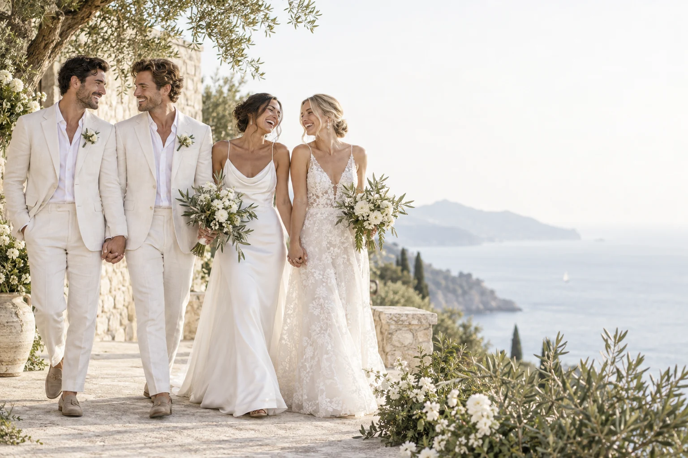

12 платежей без процентов
По банковской карте за наши услуги.
При одобрении операции и наличии доступного лимита карты.
Ваша любовь · ваш путь
Онлайн-свадьба для ЛГБТ-пар.
Документы готовит наша команда.
Церемония в день получения разрешения возможна, если оно уже выдано, ведущий свободен и требования выполнены.
Дома, с семьёй, в месте, которое вы любите. Нажмите ▶ — и почувствуйте настроение.
Сценарии для вдохновения · AI-иллюстрацииЛичное сопровождение, учитывающее ваши пожелания.
От решения до церемонии
Мы проверяем документы и личные сведения, включая информацию о предыдущих браках, если это актуально.
Команда заполняет заявление. Каждый из вас лично проходит проверку личности и подписывает свою часть.
После выдачи разрешения команда согласует церемонию онлайн с ведущим и двумя свидетелями. Ведущий находится в Юте; вам нужно лично участвовать в церемонии.
Ясная информация перед решением
Да. В Юте разрешения на брак выдаются однополым парам при соблюдении требований к документам, личности и церемонии.
В 2023 году Верховный суд подтвердил регистрацию онлайн-браков, заключённых в Юте, при наличии надлежащего официального свидетельства. Мы готовим документы с учётом требований к конкретному случаю. Если ведомство потребует личную явку, мы заранее согласуем её с вами. Оформление статуса для иностранного партнёра — отдельная процедура.
Читайте о документах и регистрацииНаша команда заполняет и готовит документы, координирует процесс и объясняет личные шаги. Каждый из вас проходит проверку личности, подтверждает сведения, подписывает заявление и участвует в церемонии. При необходимости вы также лично являетесь в ведомство.
Выберите подходящий способ.
По банковской карте за наши услуги.
При одобрении операции и наличии доступного лимита карты.Помогаем подать заявку в кредитную компанию на финансирование услуг.
Кредитор определяет одобрение, ставку и условия погашения.